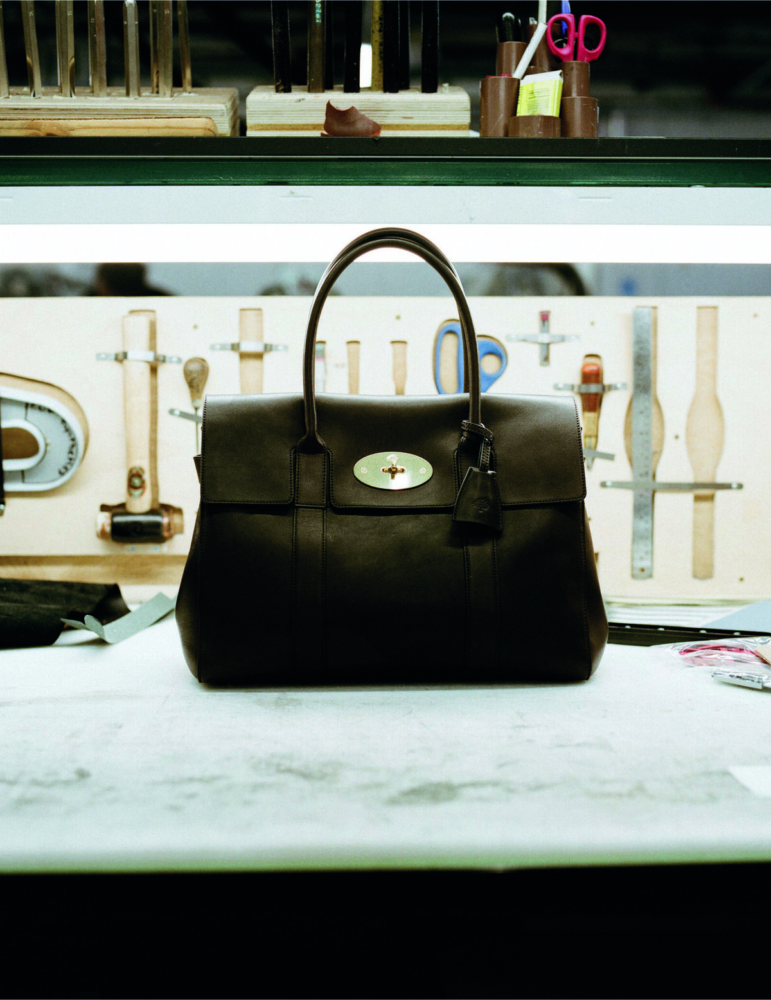

A Bayswater in Vintage Ebony. A Boston in Antique Oak. The hides walk in from pastures across the south-west of England, are tanned in Bristol, finished in Northamptonshire and stitched in Somerset. For its fifty-fifth year, Mulberry has stopped looking outward.
Most luxury supply chains read like a passport with too many stamps. Hides are bought at auction in one country, tanned in another, cut in a third, sold in a fourth, and the bag arrives in your hand carrying the residue of a journey nobody asked it to take. Mulberry's new capsule with British Pasture Leather does the opposite. The geography fits on a single Ordnance Survey sheet.
The collection lands on 28 April and marks two anniversaries at once. The brand turns fifty-five. Its Made To Last manifesto, the five-year plan to convert the business to circular and regenerative principles, turns five. Neither number is the kind that usually warrants a campaign. Both, here, are the campaign.
The pasture
British Pasture Leather is the small, pointedly determined supplier that has been working alongside Mulberry for almost five years. Its hides come exclusively from cattle raised on farms certified by Pasture For Life, a scheme that requires animals to live their entire lives on grass rather than grain. The farms lie across the south-west of England, the same patch of country that has fed Mulberry's factory in Somerset since 1971.
The hides are then tanned in Bristol with vegetable extracts, finished at a specialist tannery in Northamptonshire, and arrive at The Rookery, Mulberry's flagship factory, for cutting and assembly. Every step happens within roughly two hundred miles of the next. There is no air freight. There is no mid-process detour through Italy. There is, more remarkably, no need for one.
Vegetable tanning is older and slower than the chromium tanning that produces most luxury leather. It uses tannins extracted from tree bark and other plant matter. The result is leather that arrives lightly finished, almost raw to the eye, and that ripens over years rather than weeks. A scratch becomes a burnish. A handle darkens where the hand falls. The bag keeps a record of itself.
The bags
Four pieces anchor the release. The Bayswater returns in Vintage Ebony, the deep brown that suits the silhouette best, and which most Mulberry loyalists will recognise as the one their mothers carried. The Boston, the heavier of the two, appears in Antique Oak, a warmer mid-tan that catches the light in the way the leather wants to be photographed. A Darley Cosmetic Pouch and a Zipped Pouch finish the line, both in pared-back proportions that suggest the brand has stopped trying to invent silhouettes and started trying to perfect them.
Prices run from four hundred and ninety-five pounds to two thousand two hundred and forty-five. Every piece carries a lifetime manufacturing warranty and arrives with a care kit, a small tin of leather wax and a cloth. The implication is unambiguous. Mulberry expects the customer to be using the bag in 2046.

The Bayswater in Vintage Ebony, vegetable-tanned British Pasture Leather. Photography courtesy of Mulberry, via Wallpaper*
The Rookery
The Rookery is the name Mulberry gives to its main factory, the long, low building in Chilcompton, Somerset, where roughly half the brand's leather goods are still made. It is one of the few places in the British luxury industry where the words flagship factory mean what they used to. Most heritage houses moved production years ago. Mulberry stayed.
The persistence has cost the brand. UK manufacturing is expensive, and the markets prefer cheap stories to dear ones. But it has also given Mulberry the one thing the new collection trades on, which is provenance that survives scrutiny. The hides really were raised on grass in Devon and Somerset. The tanners really do live in Bristol. The cutters and stitchers really do walk in to the same building their predecessors did.
A scratch becomes a burnish. A handle darkens where the hand falls. The bag keeps a record of itself.
Margaux DelacroixThe quiet argument
What Mulberry is selling here is not, strictly speaking, a bag. The Bayswater has existed since 2003. The Boston has existed for longer. What is for sale is a sentence, which reads roughly as follows. British cattle, raised on British grass, were turned into British leather by British tanners and stitched into British bags by British hands.
That sentence is an act of resistance against an industry that, for fifty years, has organised itself around the cheapest possible route from animal to object. It is also an act of pragmatism. The customers who can spend two thousand pounds on a handbag have spent the past decade getting better at asking where the materials came from. Mulberry has decided, finally, to answer in full.
The bags themselves will outlast their stories. They will be carried, scuffed, repaired, handed down, and eventually returned to the factory for refurbishment under the Made To Last programme. The leather will darken. The brass will dull. Someone in Chilcompton will replace a strap. The supply chain will close on itself one more time, and the only foreign visitor will be the customer.